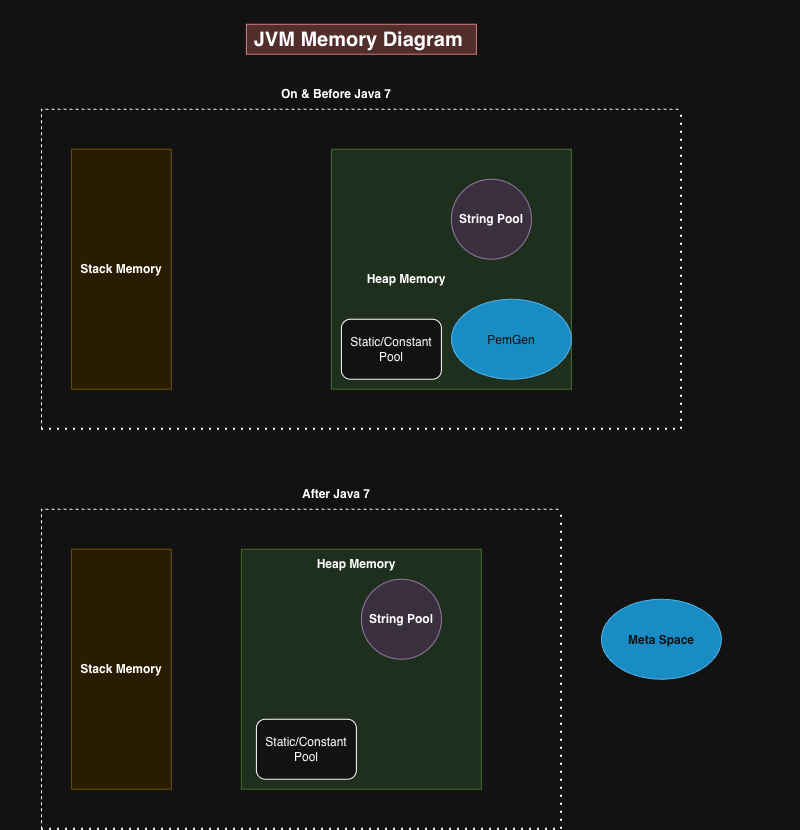
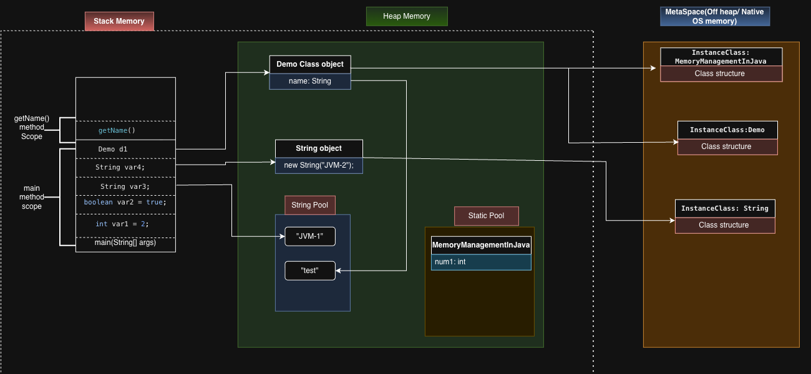
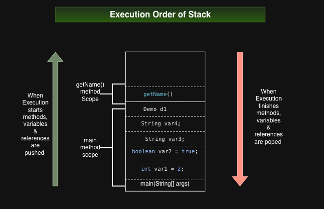
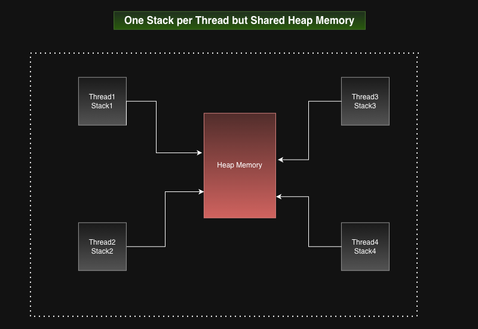
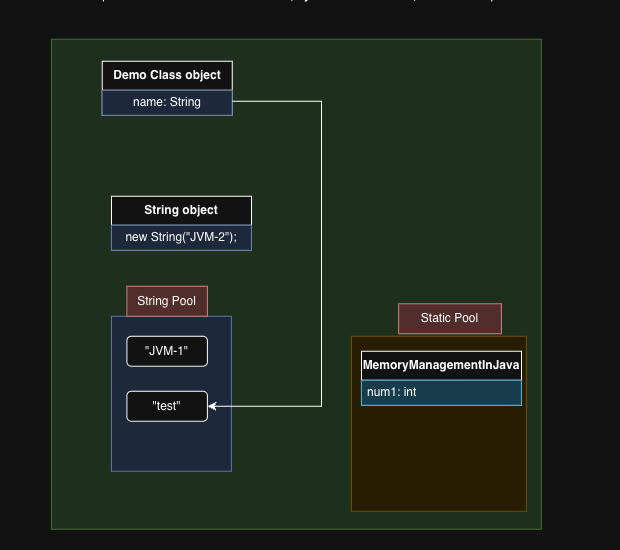
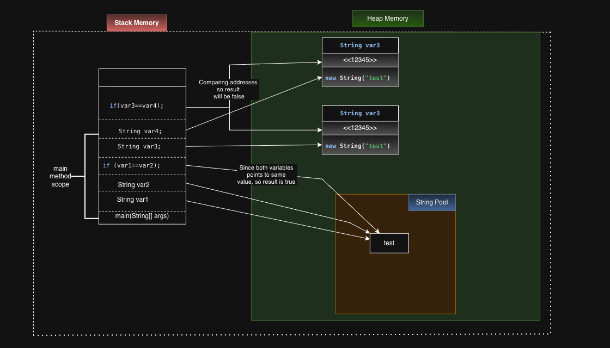
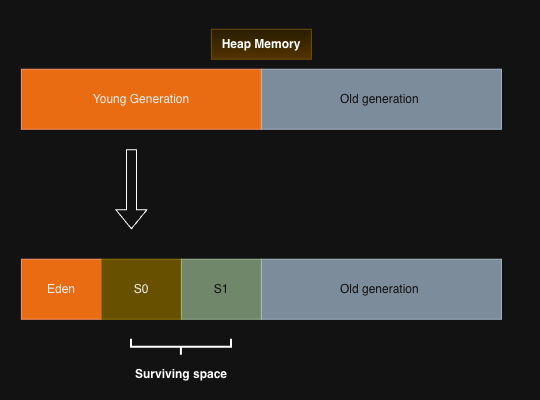
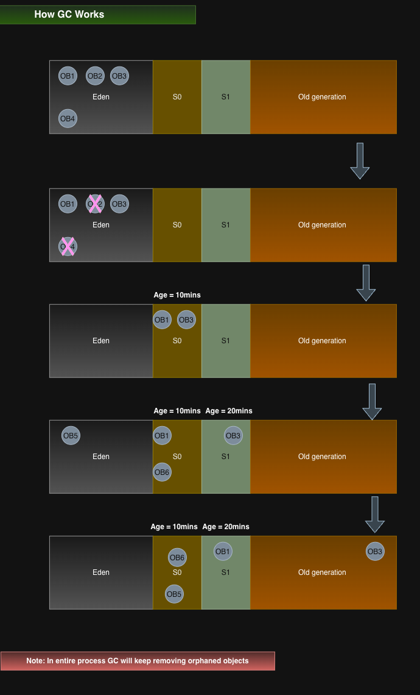

JVM Memory Management
Learn how Java stores method frames, objects, strings, and class metadata, and how garbage collection reclaims memory. This guide includes PNG diagrams, Java examples, and commands for investigating memory problems.
Contents
- Memory overview
- Stack memory
- Heap memory and references
- Strings and the string pool
- Metaspace
- Garbage collection
- Garbage collectors
- Diagnosing memory problems
- Diagram resources
Memory overview

The following areas form the core memory model used in this guide:
| Area | Purpose | Scope |
|---|---|---|
| JVM stack | Frames for active method calls, including local variables and operand stacks | One per thread |
| Heap | Objects and arrays | Shared by threads |
| Metaspace | Class metadata in HotSpot | Native memory managed by the JVM |
The JVM also has program counters and native method stacks. Its specification leaves physical layout and optimizations to implementations. See the JVM runtime data areas specification.
Version history: interned strings moved from PermGen into the main heap in JDK 7. PermGen was removed in JDK 8, with class metadata moving to native memory. The diagram groups Java 7 with earlier releases; use these version boundaries when reading it. Sources: JDK 7 VM changes and HotSpot class metadata.
Stack memory
A method invocation creates a frame; returning discards it. Frames contain local variables, an operand stack, and information used for linking and return. Calls unwind in LIFO order: the most recent call returns first.

In the example, main() holds primitive local values and
references such as var3, var4, and d1. Calling d1.getName() creates
another frame. Its return removes that frame while main() continues. A
reference can also be stored in an object's field or an array, so references
are not confined to stacks. Instance primitive fields belong to their objects.

Excessive call depth can cause StackOverflowError. Releasing a frame does not
immediately free every object it referenced: an object may remain reachable
elsewhere. See JVM frames.
One stack per thread

Each thread has its own stack, while objects in the heap can be shared. Concurrent changes to shared objects require an appropriate synchronization strategy.
Heap memory and references

The arrows show reachability: d1 refers to a Demo object, which has a name
field referring to a string. Separate variables can refer to the same object.
The “Static Pool” box is a conceptual grouping of class-level state, rather than a standard named heap generation. Likewise, the runtime constant pool is per-class linking information and should not be confused with the string pool.
The following example illustrates local values, object references, and a nested method call:
public class MemoryManagementInJava {
static int num1 = 10;
public static void main(String[] args) {
int var1 = 2;
boolean var2 = true;
String var3 = "JVM-1";
String var4 = new String("JVM-2");
Demo d1 = new Demo();
String name = d1.getName();
}
}
class Demo {
String name = "test";
String getName() {
return name;
}
}
This is a conceptual memory model, not a promise that optimized machine code allocates every value exactly as drawn.
Strings and the string pool

String literals are interned. new String("test") creates a distinct string
object; == compares object identity and equals() compares string content.
intern() returns the canonical pooled representation. See the
String API.
String var1 = "test";
String var2 = "test";
String var3 = new String("test");
String var4 = new String("test");
System.out.println(var1 == var2); // true
System.out.println(var3 == var4); // false
System.out.println(var1 == var3); // false
System.out.println(var1.equals(var3)); // true
System.out.println(var1 == var3.intern()); // true
In the diagram, the second heap object labeled var3 represents the object
referenced by var4. Addresses are illustrative; == tests reference identity.
Metaspace
HotSpot stores class metadata in Metaspace, using native memory outside the Java object heap. The combined memory diagram shows how heap objects relate to their class structures.
Class metadata can be reclaimed when classes are unloaded. Retained class
loaders and repeated dynamic class generation can lead to Metaspace growth.
An OutOfMemoryError: Metaspace can also result from a restrictive limit; the
message alone does not establish a class-loader leak. See
HotSpot metadata allocation and reclamation.
Garbage collection
Garbage collection reclaims objects that are no longer reachable through the references relevant to the collector. An object can be unreachable even if other unreachable objects still refer to it; cyclic references alone do not prevent collection.
Marking generally identifies live objects. Sweeping reclaims unused storage; copying or compaction can move surviving objects. These are different operations, and collectors combine them in different ways.
Young and old generations

This image represents a traditional generational collector layout. Newly allocated objects commonly enter Eden. Surviving young collections increases an object's age; older survivors may be promoted into the old generation. Age counts collections survived, not elapsed minutes. The exact layout and promotion decisions depend on the collector. See Oracle's generational collection guide.
Following the example objects

OB1throughOB4are initially drawn in Eden.OB2andOB4become unreachable and can be reclaimed.- Live objects survive collection and move into survivor storage.
- New objects enter Eden; later collections reclaim dead objects and retain survivors.
- Some survivors eventually move into old-generation storage, where they remain subject to collection.
Diagram note: read the age labels as survived collection counts, not minutes. In a copying young collector, S0 and S1 normally alternate roles between collections rather than forming successive timed stages. Promotion may occur sooner if survivor space is insufficient. The diagram illustrates survival and promotion rather than an exact collector trace.
Garbage collectors
| Collector or category | Main idea | Clarification |
|---|---|---|
| Serial GC | Uses a single GC worker for collection | Collection pauses application execution |
| Parallel GC | Uses multiple GC workers | Parallel collection still includes application pauses |
| Concurrent collectors | Perform some GC work alongside application threads | Concurrent work does not imply zero pauses |
| G1 GC | Collects heap regions and performs much marking concurrently | Includes stop-the-world evacuation pauses; its pause target is a goal |
Concurrency describes how collection work overlaps with application execution; it does not guarantee zero pauses. G1 uses regions rather than one fixed contiguous Eden/S0/S1 arrangement. See Oracle's G1 guide.
Diagnosing memory problems
CPU spikes, rising post-GC heap usage, long response times, and out-of-memory errors can indicate memory pressure. Correlate these symptoms with allocation rates, GC pauses, and retained objects before deciding on a fix.
Capture logs and dumps
For JDK 9 and later, a startup command can enable unified GC logging and an automatic heap dump on an out-of-memory error. Create a writable output directory first:
mkdir -p logs
java \
-Xlog:gc*,gc+phases=debug:file=logs/gc.log:time,uptime,pid:filecount=5,filesize=100M \
-XX:+HeapDumpOnOutOfMemoryError \
-XX:HeapDumpPath=logs \
-jar app.jar
Heap dumps may be large. Options and their behavior are documented in the JDK 17 java command reference.
For a running process, replace 12345 with its PID:
jstat -gcutil 12345 1000
jcmd 12345 GC.class_histogram
jcmd 12345 GC.heap_dump logs/heapdump.hprof
Histograms and heap dumps can have significant impact on the running process; use them deliberately. See jcmd diagnostics and impact levels.
Interpret the evidence
| Observation | What to investigate |
|---|---|
| Rising heap baseline after comparable collections | Long-lived retained objects, unbounded caches, growing collections |
| Frequent young collections | High allocation rate and short-lived temporary objects |
| Long pauses or frequent full collections | Heap pressure, promotion, allocation size, and collector behavior |
| Metaspace growth | Class count, generated classes, class-loader retention, and limits |
| Java heap space error | Live data size relative to available heap; retention paths |
In a heap analyzer, inspect the dominator tree, retained heap, and paths to GC roots. Shallow size measures an individual object; retained size includes objects kept alive through it. Check cache eviction, retained collections, background threads, and class-loader lifecycle. Increasing a memory limit may delay failure without fixing retention.
Diagram resources

The images use a simplified HotSpot memory model. Version-specific labels and collector behavior are clarified in the relevant sections above.